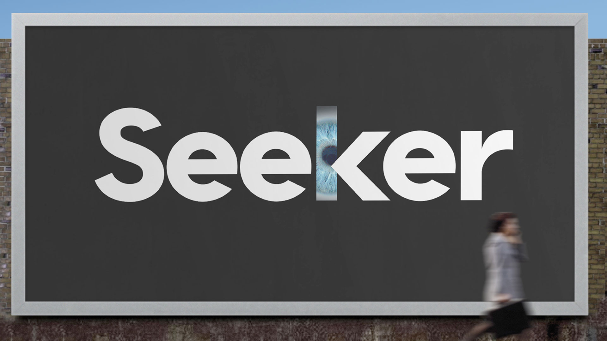

Seeker
O Seeker é uma ferramenta de código aberto para coleta de informações de geolocalização de dispositivos móveis. Utilizando técnicas de engenharia social, ela gera um link personalizado que, ao ser acessado pela vítima, solicita permissão para acessar a localização do dispositivo. Caso a permissão seja concedida, a localização exata é enviada ao operador da ferramenta.
Principais Funcionalidades:
- Geração de links para coleta de localização em tempo real
- Compatível com navegadores móveis modernos
- Interface web simples para monitoramento
- Exibição de coordenadas e mapa da localização obtida
- Registro de múltiplos acessos e resultados
Recomendado para:
Profissionais de segurança que desejam demonstrar riscos de compartilhamento de localização e conscientizar sobre privacidade em dispositivos móveis.
🔗 Repositório Oficial